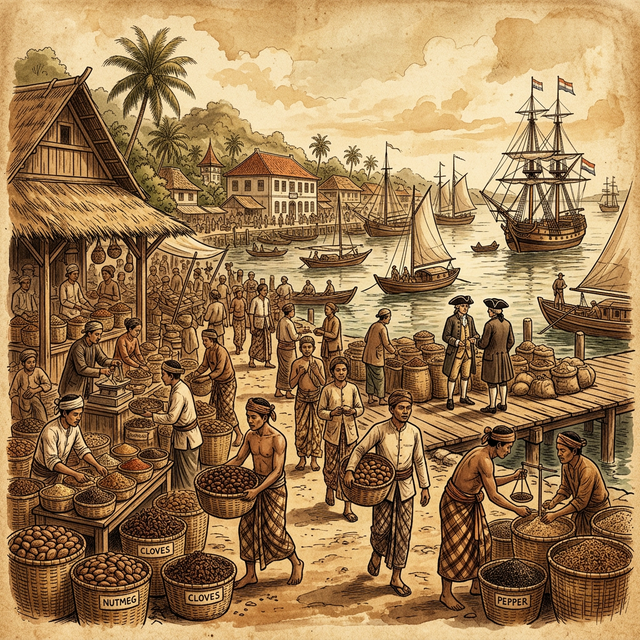

— Arsip Sejarah Nusantara —
Perjalanan empat abad penjajahan, dari kedatangan Portugis hingga kemerdekaan. Sebuah eksplorasi interaktif tentang Gold, Glory, dan Gospel.
Pada abad ke-16, rempah-rempah dari Nusantara bernilai lebih mahal dari emas di Eropa. Pala, cengkeh, dan lada menjadi komoditas paling dicari, mendorong bangsa-bangsa Eropa berlomba-lomba mengarungi lautan demi menguasai sumber kekayaan ini.
Kedatangan mereka bukan hanya membawa perdagangan, tetapi juga penjajahan yang berlangsung lebih dari 400 tahun, mengubah tatanan sosial, ekonomi, dan budaya masyarakat Nusantara secara fundamental.

Tiga motivasi utama yang mendorong bangsa Eropa berlayar ke Nusantara
Kekayaan & Rempah
↻ Hover untuk detailRempah-rempah Nusantara — pala, cengkeh, dan lada — bernilai lebih mahal dari emas di pasar Eropa. Bangsa Portugis, Spanyol, dan Belanda berlomba menguasai jalur perdagangan langsung ke sumbernya.
Kejayaan & Kekuasaan
↻ Hover untuk detailMenguasai wilayah baru berarti meningkatkan prestise kerajaan di Eropa. Setiap bangsa berusaha memperluas koloninya sebagai simbol kekuatan politik dan militer dalam persaingan global.
Penyebaran Agama
↻ Hover untuk detailPenyebaran agama Kristen menjadi justifikasi moral bagi kolonialisme. Misionaris ikut dalam setiap ekspedisi, membangun gereja dan sekolah sebagai bagian dari "misi peradaban" terhadap penduduk pribumi.
Peristiwa-peristiwa penting selama lebih dari empat abad penjajahan
Pelajari lebih dalam tentang era kolonialisme dan dampaknya bagi bangsa Indonesia.
Mulai dari Era 3G →